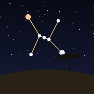
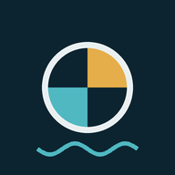
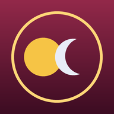

Ku soo dhawaada hoyga Cirday ee uruurinta, kaydinta iyo dabagalka cilmiga xiddigaha ee ummadda Soomaaliyeed
- 88kooxood oo magacyo Soomaali ah leh
- 28god oo uu dayaxu dego
- 32majare oo badmaaxyada
- 38magaalo xeebeed oo saadaal leh
Halkan kala deg app-ka aad u baahan tahay
Afar app oo bilaash ah, oo taleefoonkaaga kuugu shaqaynaya internet la'aan; Soomaali, English iyo Carabina aad ka dhigi kartid.

Cirday
Taleefoonka cirka u jeedi, waxa uu kuu sheegayaa xiddig kasta oo aad aragto magiciisa Soomaaliga ah. Sidoo kale waxaad ku arki kartaa rugaha, meerayaasha, Jidcirir, godadka iyo bilaha dhalanaya.
88 kooxood, 13 rugood, 28 god, 32 majareFurKal-tirsiyada Soomaalida
Kaltirsiyadii Soomaalida oo hal meel ku jira: godka uu dayaxu fadhiyo, sannadka doonyaha iyo bilaha dayaxa ee xiddigaha dhacaya, sida buugga Afaggaal.
Fur
Saadaasha Badda iyo Webiyada
Mawjadaha, dabaylaha iyo roobka 38 magaalo oo xeebaha ku yaalla (Jabuuti ilaa Raaskambooni), iyo qulqulka iyo khatarta fatahaadda webiyada Shabeelle iyo Jubba.
Xeebaha iyo webiyadaFur
Kaltirsiga Qorraxda iyo Dayaxa
Taariikhaha Miilaadi, Hijri iyo Dabshid, waqtiyada salaadda, qiblada, jiheeyaha, bisha cusub, madoobaadyada iyo kubbadda cirka.
Hijri, Dabshid, QibloFur28-da god ee dayaxu dego
Soomaalidu waxay cirka u qaybisay 28 god oo uu dayaxu habeen kasta mid dego. Godadka waxay u qaybsamaan afar kooxood oo xilliyada sannadka la socda. Dhibicda iftiinka leh waa godka uu dayaxu caawa fadhiyo.
Aqoonta soo jireenka ah iyo qalabka casriga ah
Cirday waa mashruuc bilaash ah oo soo noolaynaya falagga Soomaalida: magacyada xiddigaha, godadka dayaxa, majarayaasha doonyuhu ku socon jireen iyo kaltirsiyada. Waxaa lagu saleeyay buugga Afaggaal iyo ilo kale oo Soomaaliyeed.
Xisaab kasta waxaa lagu sameeyaa telefoonkaaga, sidaas daraaddeed app-yadu internet la'aan ayay ku shaqeeyaan. Waxaa lagu heli karaa Soomaali, English iyo Carabi.